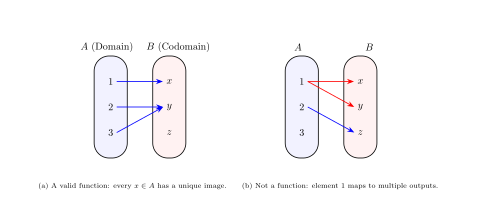
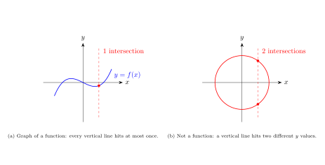
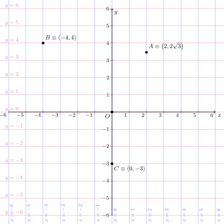
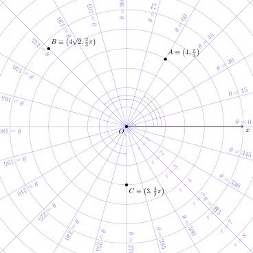
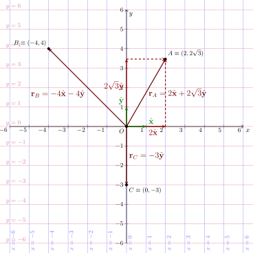

Functions and Real Functions
Definition of a function. A function \(f: A \rightarrow B\) is a relation between elements of 2 sets. It takes an element \(a \in A\), and produces one and only one output \(b = f(a)\). Sets \(A\) and \(B\) are respectively defined domain and co-domain. See Insiemistica e funzioni.

Definition of a real function, \(f: \mathbb{R} \rightarrow \mathbb{R}\). A real function is nothing but a function, whose domain and co-domamin are subsets of the real numbers \(\mathbb{R}\). See Funzioni reali a variabile reale, \(f: D \subseteq \mathbb{R} \rightarrow \mathbb{R}\).
Definition of the graph of a real function. Given a real function \(f: D \subseteq \mathbb{R} \to \mathbb{R}\), its graph is the subset of the Cartesian plane \(\mathbb{R}^2\) consisting of all points whose coordinates are \((x, f(x))\) as \(x\) varies across the domain \(D\):
\[\text{Graph}(f) = \{ (x, f(x)) \in \mathbb{R}^2 \mid x \in D \}\]
Visually, it is the “curve” or geometric shape drawn on the plane that translates the algebraic rule of the function into a picture. A point \((x_0, y_0)\) belongs to the graph if and only if \(y_0 = f(x_0)\).

Graph of functions will be useful later, to give a geometrical interpretation of derivatives and integrals.
Introduction to Analytical Geometry
See Math: Analytic geometry: Points in Plane: Coordinates
Analytical geometry is a bridge between algebra and geometry. Points in space can be represented with a set of coordinates of a coordinate system.
Geometric entities and properties:
- are idependent (invariant) from the arbitrary choice of the coordinate system
- can be represented with algebraic relations between the coordinates, once a coordinate system is chosen
Coordinate systems are for free. It’s possible to use more than one coordinate system in the same problem, if they help in the solution. Any additional coordinate system that’s not helping with the solution only adds unnecessary algebra and increases the probability of making mistakes.
Just as an example, the points of the same circle with radius \(R\) in a plane can be easily represented:
- using a system of Cartesian coordinates \((x,y)\) with the origin in the center of the circle, as \(x^2 + y^2 = R^2\)
- using a system of polar coordinates \(r, \theta\), with the origin in the center of the circle, as \(r = R\), for all \(\theta \in [0, 2 \pi]\).


Introduction to Vectors: Position Vectors
See Math: Analytic geometry: Points in Plane: Position Vectors
We use geometry in Eulcidean space as a way to introduce vectors, very powerful mathematical tools in both math and physics: at the university, you’ll learn that a lot of quantities of interest in math and physics are vector quantities, and (almost?) all the fundamental equations in physics are vector equations.
Once a point \(O\) in an Euclidean space is set as a reference, the so called origin, then a point \(P\) in the Euclidean space can be described with its position vector w.r.t. \(O\),
\[\vec{r}_P = \overrightarrow{OP} = P-O \, \]
that can be represented1 as the arrow with extreme points \(O\) and \(P\), pointing from \(O\) to \(P\).

This is just a first look at vectors. Without too many details, a vector is nothing too strange:
- it’s a mathematical object, just like numbers are
- with some mathematical properties
- that can be used to represent geometrical or physical quantities, that numbers alone can’t fully represent. Examples of vector quantities are: velocity, acceleration, force,…magnitude of these physical quantities is not enough; we also need direction
- that can be combined with other vectors, through vector operations (vector algebra). it’s possible to multiply a vector by a number, it’s possible to sum and subtract vectors, it’s possible to define different kinds of products using vectors,…
Footnotes
The arrow is just a useful graphical representation of the vector, it’s not the vector itself.↩︎